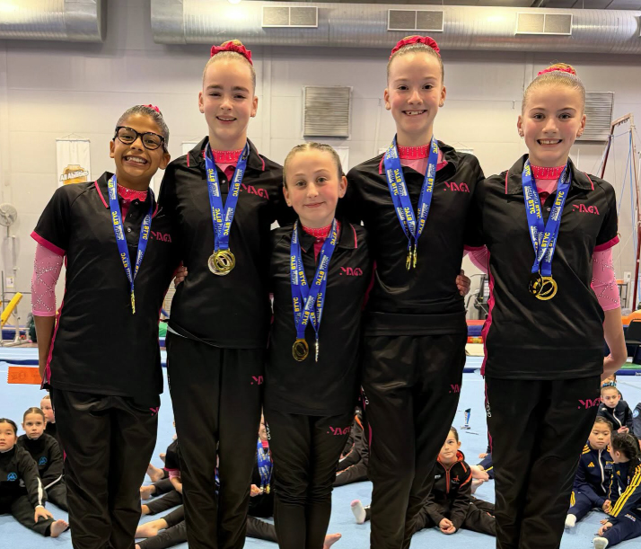

BTYC WAG Junior Invite 2026: MAGA Sweeps Level 7 as BTYC Wins Three at Home
Eastern opens its season with six team podiums, PIT collects gold and silver, and Kotomi Lee leads a BTYC sweep of Level 6 Division 1
15 July 2026 · David "Tonko" Tonkin
TL;DR
BTYC Gymnastics hosted the 2026 WAG Junior Invite on 12 July, drawing nine clubs across Levels 3 to 7. Melbourne Acrobatic Gymnastics Academy (MAGA) won both Level 7 team titles and swept all seven individual placings in Division 1, where it was the only club entered. Host club BTYC won three team titles on its own floor, at Levels 4, 5, and 6, and swept the individual podium in Level 6 Division 1 through Kotomi Lee and Lauren Kam. Five clubs shared the day's eight individual level titles, MAGA with three, BTYC with two, and one apiece for Athleta, Eastern, and Gymnastics Unlimited. Eastern Gymnastics Club opened its season with team results across six separate divisions, and PIT Gymnastics picked up a team gold and silver at Levels 3 and 4.
BTYC Gymnastics hosted its WAG Junior Invite on 12 July, drawing nine clubs to its home floor across Levels 3 through 7: BTYC, Melbourne Acrobatic Gymnastics Academy (MAGA), Eastern Gymnastics Club (EGC), PIT Gymnastics, Dolphin Gymnastics Club, Athleta Gymnastics, Gymnastics Unlimited, Mordialloc Gymnastics, and Eclipse Gymnastics. Levels 3 and 4 competed as team-only divisions; individual all-around results, 106 routines in total, were scored from Level 5 up.
MAGA'S LEVEL 7 SWEEP
Level 7 belonged to MAGA. In Division 1, the club had the division entirely to itself, seven gymnasts and a single team, and still competed it out properly: Indigo Gration won on 47.0, ahead of Arianna Naidu (46.0) and Lottie Studer (45.65), with the MAGA team posting 140.15, the highest team score of the entire competition.

MAGA's Level 7 Division 2 team, gold medallists on the day. Photo: MAGA.
Division 2 was a genuine field, 25 gymnasts across six clubs, and MAGA still walked away with the team title (133.9) and three of the top four individual placings. Isla Saffin won on 44.75, with BTYC's Amelia See the closest challenger in second on 44.1. Peyton Baldwin and Matayha Nwesser rounded out MAGA's top four, and Marlee Magee tied EGC's Alexis Stodden for sixth, both on 43.4.
BTYC WINS THREE AT HOME
The host club made the most of its own floor. BTYC's team took out Level 4 Division 2 (108.475), Level 5 Division 3 (105.075), and Level 6 Division 3 (99.525), three team titles across three different levels on the day. Fiona Liu backed up the Level 5 Division 3 team win with the individual title in the same division, 35.55 ahead of clubmate Elisha Choi on 35.3.
Level 6 Division 1 had just two entries, both from BTYC: Kotomi Lee won on 36.775, the highest Level 6 score anywhere in the competition bar one, ahead of Lauren Kam on 35.575.
A SPREAD OF WINNERS AT LEVEL 5 AND 6
Outside of MAGA and BTYC, the individual level titles were shared around. Athleta's Maggie Halpin won Level 5 Division 2 on 36.175, and the club's team took the division title as well (105.425), a clean sweep for Athleta in that division. Eastern's Ailie Zeng posted 37.15 to win Level 6 Division 2, the single highest Level 6 score of the day. Gymnastics Unlimited's Jasmine Saharan won Level 6 Division 3 on 35.25, and Dolphin's team took out Level 3 Division 3 (99.75). Between them, MAGA and BTYC accounted for five of the day's eight individual titles; Athleta, Eastern, and Gymnastics Unlimited picked up the rest.
EASTERN'S SEASON OPENER
For Eastern Gymnastics Club, the Invite doubled as a season launch. "Our Junior WAG competition season has officially kicked off," the club posted afterwards, "the girls did spectacularly." The results backed it up: team finishes across six separate divisions, first and second in Level 3 Division 2, third and fourth in Level 4 Division 2, fourth-place finishes at Level 5 Division 2 and Division 3, first in Level 6 Division 2, and third in Level 6 Division 3, plus a runner-up finish in the Level 7 Division 2 team event behind MAGA.
“Our Junior WAG competition season has officially kicked off. The girls did spectacularly.”
PIT Gymnastics had a productive day of its own, a team gold in Level 4 Division 3 (107.35) and a team silver in Level 3 Division 3 (99.1), alongside individual results at Levels 5 and 7. Dolphin, Mordialloc, and Eclipse Gymnastics rounded out the field, with Eclipse's Tiahn Falla and Amelia Bellamy both finishing inside the top eight of a 25-strong Level 7 Division 2 field.
Full results from the 2026 BTYC WAG Junior Invite, every level and division, are up on the results page. For the host club's full season history, check out the BTYC club page.
See the full season leaderboards
Track every Victorian club and athlete across WAG and MAG - updated throughout the season.